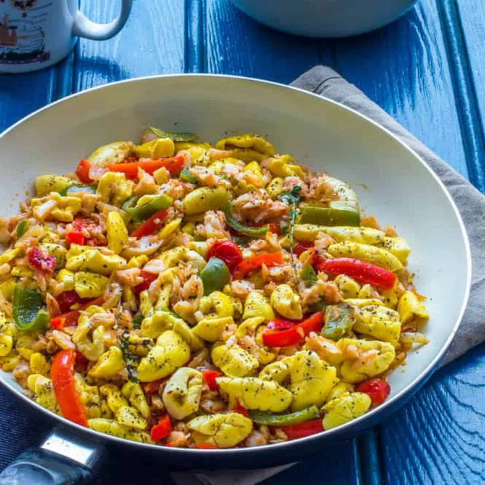

Jamaican Ackee and Saltfish Recipe

Ackee and Saltfish is the national dish of Jamaica.
It is made with ackee and salted codfish and typically eaten for breakfast or brunch with an assortment of yams, dumplings or green bananas etc.
Ingredients
- ½ pound boneless salted codfish
- ¼ cup vegetable oil
- 1 sprig fresh thyme
- 1 onion chopped
- 2 tomatoes diced
- 2 scallions chopped
- 1 small bell pepper sliced
- 1 tsp. freshly ground black pepper
- 1 tsp. paprika (optional)
- 1 scotch bonnet pepper pierced
- 18-20 ounce can ackee, drained
Steps
- Soak salt cod fish in water overnight, if needed boil to get rid of excess salt. Set aside.
- Add about 2 Tablespoons of vegetable oil to the pan. Followed by onions, garlic, thyme, and scallions.
- Sauté for about a minute, stirring occasionally to prevent any burns.
- Add tomatoes and continue cooking for about 3 minutes then add hot pepper, black pepper, mix until ingredients have been thoroughly combined. Cook for about 5 minutes or more. Add water as needed.
- Finally throw in salt fish, cook for a few minutes then add ackee and cook for another 3 minutes or more - adjust the seasoning to taste. Remove from the heat and let it cool. You may prepare this a day in advance.
Go back to homepage...